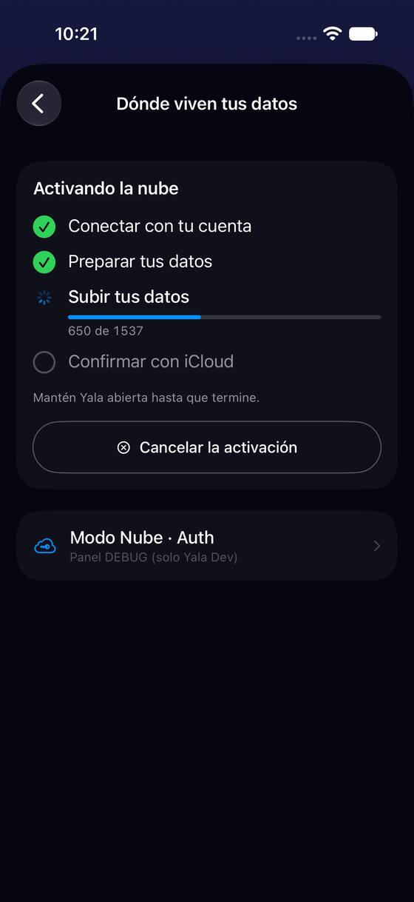
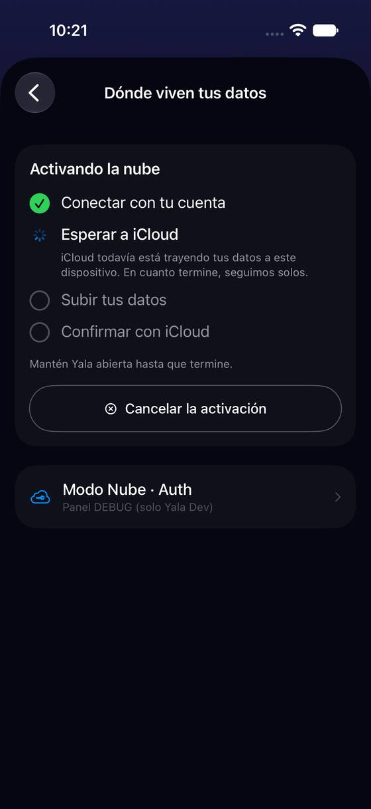
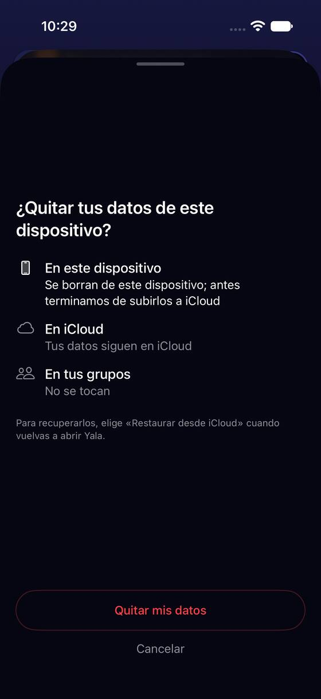
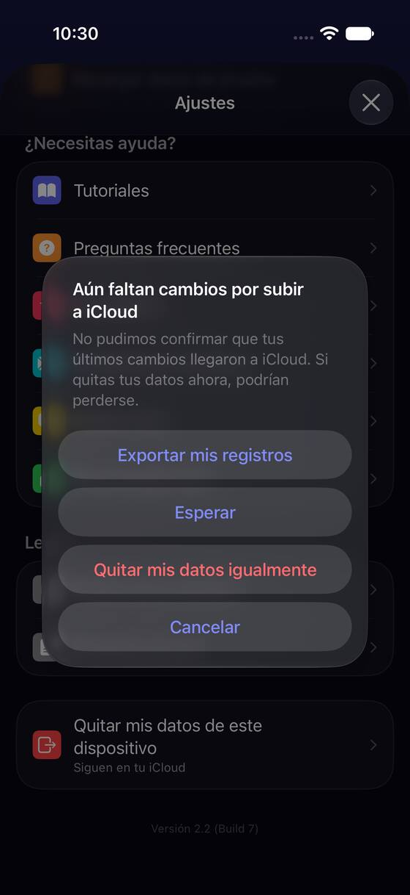
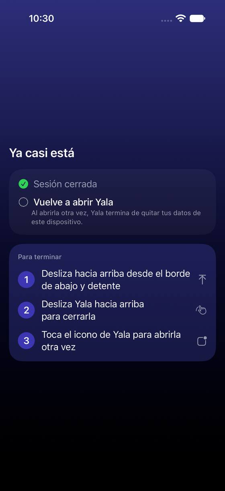

La subida no dice cuánto falta, y «Ya casi está» olvida decir dónde quedaron los datos
Hoy
Capturas del simulador (app de origin/2.3, semillas de prueba). Pasos hoy: 3 gestos fuera de Yala al terminar





De dónde sale
- Captura Capturas p-upload, p-waitingICloud (gancho de progreso), o02-o04 (semilla «minimal», «Quitar mis datos de este dispositivo»).
- Código
CloudProgressStepsView.countView:L10n.Storage.Steps.uploadedCount(done, of: total);storage.steps.keepOpen. - Código
SignOutRelaunchView:relaunchDoneSignedOut(«Sesión cerrada») yrelaunchAfterSignOut. - Antes Revisión del usuario nuevo (PR 837): F1 (salir y volver a abrir) y F21 (sin telemetría en esa pantalla).
Las opciones
De 3 a 5 alternativas con el mismo caso. Desliza cada recorrido; el anillo cian marca dónde toca Lucía.
Cifras con su unidad y un plazo; «Ya casi está» que dice dónde quedan tus datos
Mientras sube: «650 de 1.537 registros · quedan unos 2 minutos» (el plazo sale del ritmo que ya se mide para la barra) y por qué hay que tener Yala abierta. Al terminar, la lista de «Ya casi está» suma la línea que la hoja anterior ya decía —«Tus datos siguen en tu iCloud»— y nombra la acción que Lucía eligió («Quitaste tus datos de este iPhone»), no otra («Sesión cerrada»).
650 de 1.537 registros · quedan unos 2 minMantén Yala abierta: si sales, la subida se pausa y sigue al volver.
A favor
- Contesta las dos preguntas de una espera: cuánto falta y si puedo irme.
- «Ya casi está» deja de contradecir a la hoja anterior (que sí decía «siguen en iCloud»).
En contra
- El plazo es una estimación: con red irregular puede saltar; mejor «unos minutos» que una cifra exacta.
- Pide reescribir los «hecho» de cada caso (activar, volver, cancelar, cerrar sesión, quitar datos).
Si sale de Yala a mitad, un aviso para volver
R1 más una notificación local cuando Lucía sale de Yala con la activación a medias: «La subida de tus datos se pausó · Abre Yala para que siga». Solo si ya dio permiso de notificaciones; no lo pide aquí.
650 de 1.537 registrosMantén Yala abierta hasta que termine.
La subida de tus datos se pausó. Abre Yala para que siga: van 650 de 1.537.
A favor
- Una espera larga (iCloud trae datos, «puede tardar unos minutos») ya no depende de que Lucía se acuerde.
- Reusa el permiso de notificaciones si ya existe.
En contra
- Una notificación más que diseñar, programar al pasar a segundo plano y retirar al volver.
- Sin permiso de notificaciones, no aporta nada.
Enseñar los tres gestos con un dibujo
«Ya casi está» cambia la lista de tres frases por un dibujo animado del selector de apps (deslizar, apartar Yala, tocar el icono), con las frases como pie. No quita el paso: lo hace más fácil de seguir.
A favor
- Quien no lee (P3) o tiene texto grande (P7) sigue un dibujo antes que tres frases.
- Vale igual para el alta privada (F1 de la revisión del usuario nuevo), que tiene el mismo paso.
En contra
- Una animación por idioma y por tipo de iPhone (con y sin botón de inicio).
- El paso de salir y volver sigue estando.
Lado a lado
La última pantalla de cada recorrido, frente a hoy.
La subida de tus datos se pausó. Abre Yala para que siga: van 650 de 1.537.
Comparación
| Opción | Pasos para el caso (maqueta) | Esfuerzo | Riesgo | Reabre |
|---|---|---|---|---|
| Hoy | 3 gestos fuera de Yala al terminar | — | — | — |
| R1 · Cifras con su unidad y un plazo; «Ya casi está» que dice dónde quedan tus datos | igual que hoy (3 gestos fuera de Yala al final) | bajo | bajo | — |
| R2 · Si sale de Yala a mitad, un aviso para volver | 1 toque para volver | medio | bajo | — |
| R3 · Enseñar los tres gestos con un dibujo | igual que hoy | medio | bajo | — |
Lente de perfiles
Perfiles simulados, no entrevistas Los siete perfiles de la revisión del usuario nuevo, usados como lentes. riesgo alto de trabarse · medio · bajo.
| Perfil | Hoy | R1 | R2 | R3 |
|---|---|---|---|---|
| P1 · Migrante de Excel | ¿y mis datos? | sabe dónde están | — | — |
| P2 · Principiante abrumado | «Sesión cerrada» | frases cortas | le avisan | dibujo |
| P3 · Anotador rápido que no lee | sale a mitad | ve el plazo | no tiene que acordarse | no lee |
| P4 · Experto de otra app | — | bien | bien | — |
| P5 · Llega por una invitación de grupo | — | — | — | — |
| P6 · Varias monedas y tarjeta | 1.537 sin plazo | con 1.537 registros sabe cuánto | esperas largas | — |
| P7 · Texto grande, a veces en iPad | tres frases de gestos | igual | — | dibujo grande |
Recomendación: R1
Es lo barato que contesta lo que una espera hace preguntar (cuánto falta, puedo irme, dónde están mis datos) y quita la contradicción con la hoja anterior. R2 vale la pena si los datos dicen que la gente sale a mitad: hoy no se puede saber (F21).
Qué decide Jürgen
- ¿«Ya casi está» dice lo que se hizo y dónde quedaron los datos en cada caso (R1)?
- ¿Se mide cuánta gente sale a mitad antes de añadir el aviso de R2?
Revisión por vistas 2.3 · Dónde viven tus datos: nube, iCloud y cierre de sesión. Maquetas en HTML con datos ficticios: no son la app. Pasos contados sobre las maquetas; los de «Hoy», en el simulador o en el código citado.